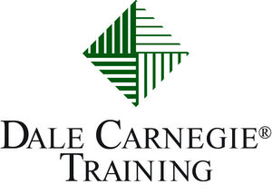
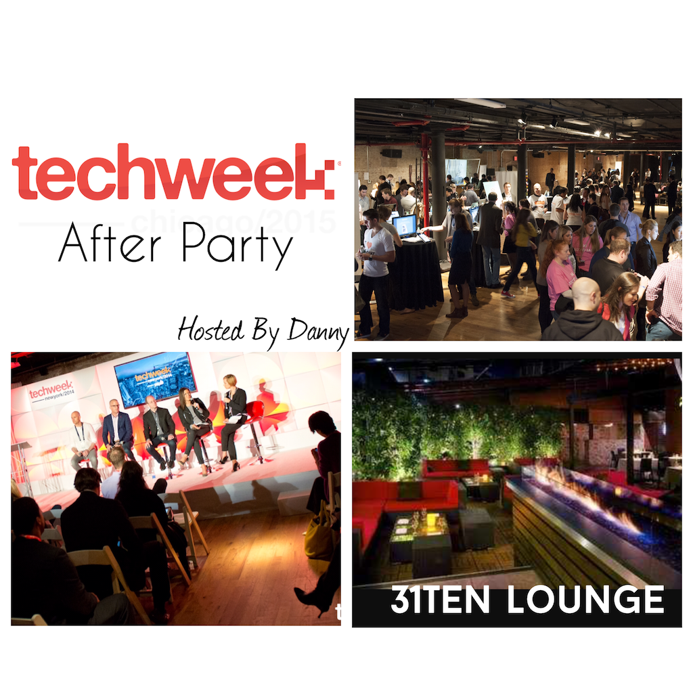
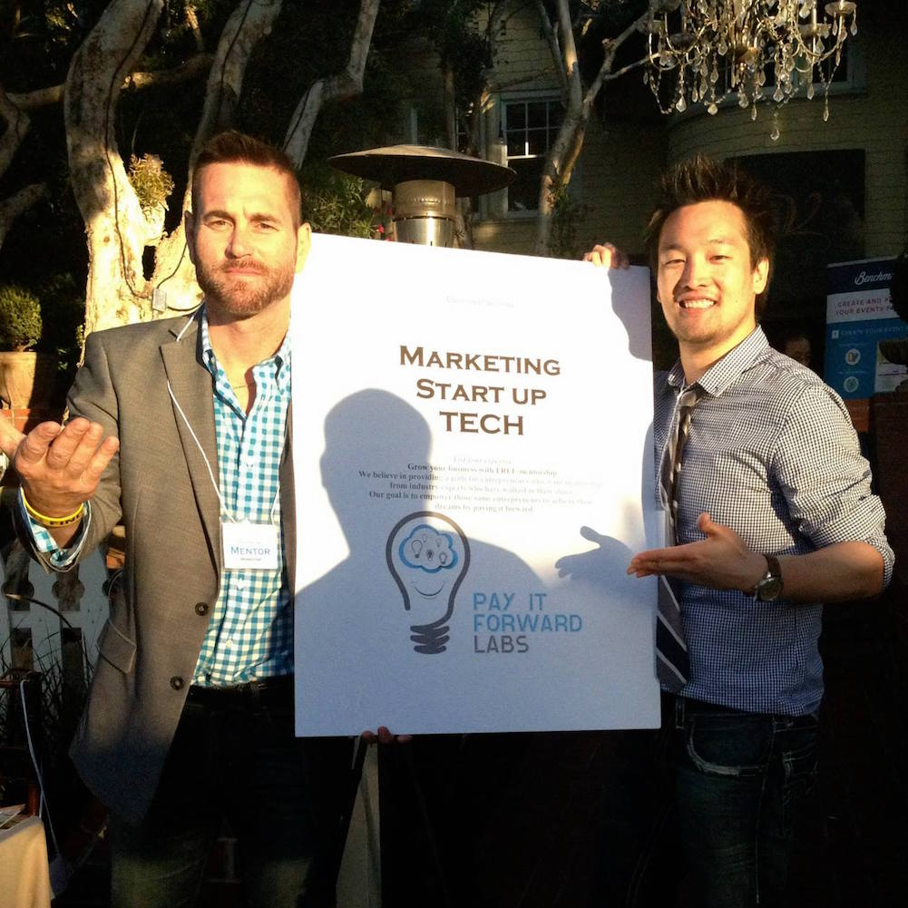
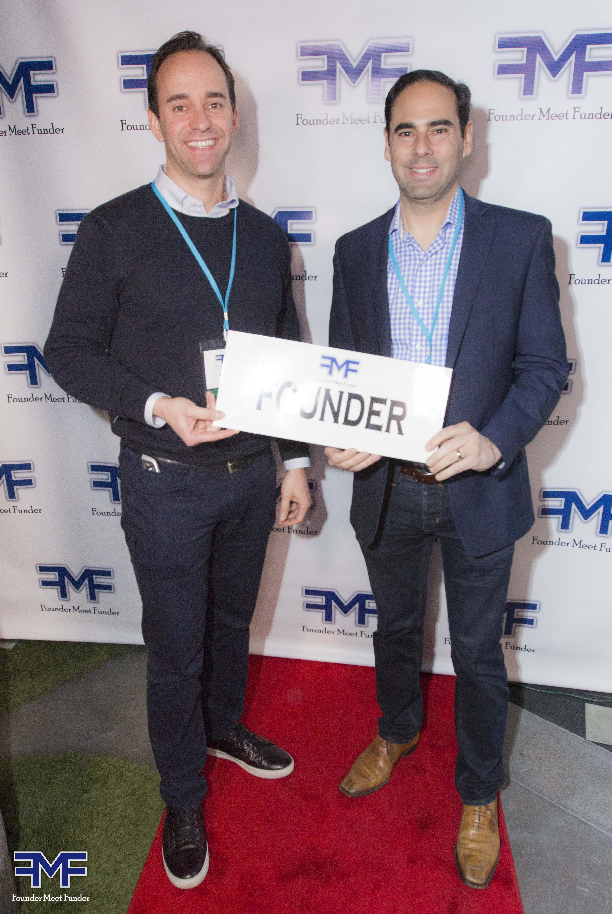
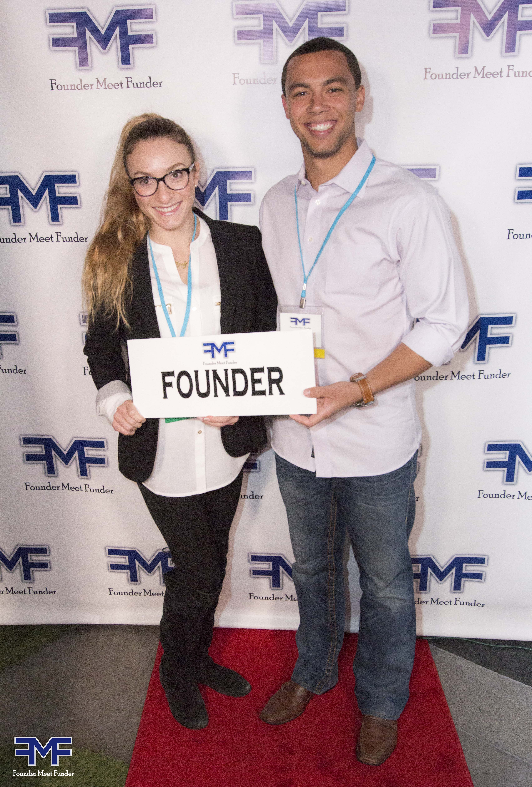
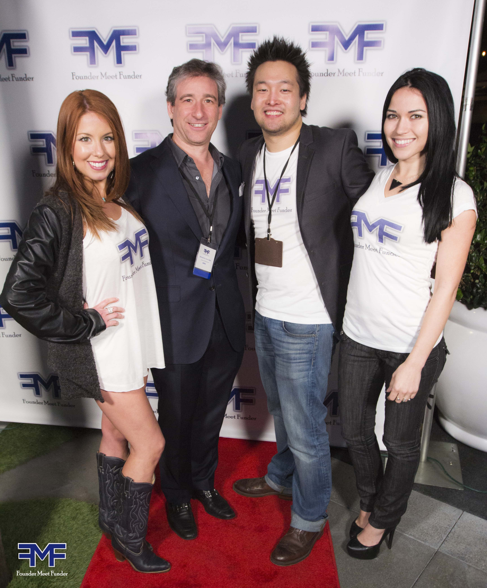

About
Daniel Jang

Founder
Contact Info
email: dannyflush@gmail.com
cell: (323) 709-4841
Upcoming Events
Founder Meet Funder
(StartUp SpeedFunding, Invite Only Event, 100)
*Startup Investing means investing in ideas, entrepreneurs, and innovation. It means changing the way the world works. Great ideas need Funding from influencers to innovate.
Event Details
- Early and mid stage startups seeking seed funding or Series A
- Insights from successful investors and entrepreneurs.
- Deals and partnerships to make valuable connections
- Top 20 start ups Meet our 20Funders in 60min. (Reserved)
- Color-coded Tags for Founder and Funder. Easier Networking
Who Attends
- Newly launched startups
- Mid Stage Start ups
- Founders and CEOs
- VC and Angels
- Influencers and innovators
- Digital business leaders
- Leaders in Technology and service
- Directors of Growth
Who Attends
- Kelly Perdew @Moonshots Capital (Angel Investor)
- James Brandt @Tech Coast Angels (Active Angel Investor)
- Anthony Valencia @Pasadena Angels (Early-stage Angel Investor)
- Jeff Lapin @Tech Coast Angels (President of Tech Coast Angels)
- Mark Linao @Technicolor Ventures (New Seed/A Stage)
- kamran Qamar @Tech Coast Angels
- Daniel P. Harris @DPH Ventures
- Kenny kam @Pasadena Angels
- Shaun Randolph @SoTech Ventures (Impact investor)
- Richard Morganstern @Tech Coast Angels ( LA Cleantech Incubator)
- Zach Hamilton @Venture51 (Post seed funding for early stage)
- Richard Wolpert @Amplify.la
- Vaughn Blake @Autochrome Ventures (Early SeedStage)
- Nick Carabetta @ Yang Ventures (Accelerator)
- Donray Von @ Venture Capital (Tech, Mobile, Social)
- Tim Stanley @Sierra Ventures
- Cory Klippsten @ Angel investor
- Andrew Heckler @Angel.Co Investor
- Sugath Warnakulasuriya @Sand Hill Angels & Pasadena Angels
- Bill Baker @Start up Architect/Mentor
- Mike Miller @Wild Horse Labs (Accelerator)
- Sandra Susino @Amplify.LA, High Growth Venture Executive
- Monica Dodi @Women's Venture Capital Fund
- Bryce Knight @INVENT Ventures
- Francis Shih @Arena Ventures
- Jason Gilbert @Manchester Capital Ventures (Silicon Valley VC Firm)
- Abe Arnous @TMG100 (Seed Investing)
- Manny Fernandez @DreamFunded (Super Angel Investor)
- Sean Heilweil @Cache Ventures (Invest in Mobile/Awesome Start ups)
- Walter John Whitehead @AJ Baron Capital
- And 20 more Funders and Mentors
Our Top Start Ups
- EnvoyNow (Campus Delivery solution) (500Startup)
- SURKUS (Crowd Casting platform that pays people to attend Venue)
- GetDissmissed (Traffic Ticket Dismissal service)
- Tapp That App (Social App Sharing)
- Toot App (On-Demand Tutors)
- Helpr (On-Demand Babysitters)
- MetaPop (Platform Remixer)(Former CEO Beatport,Napster)
- Kitterly (E-commerce/Knitting ) (500Startups B15)
- Castifi (On-Demand Casting, Hollywood Extra)
- TAGR (Shazam for Art)
- Unision (New Music Streaming) (Former bop executives)
- VNTANA (Interactive hologram systems)
- Stample (Library Reinvented/Content)
- Yoshirt (On-Demand Custom Apparel)
- And More Awesome Start ups......
41 Ocean (Private Club)
Sponsors

Where
41 Ocean Club - 1541 Ocean Avenue #150, Santa Monica, CA 90401
When
Wednesday, March 23, 2016 from 6:30 PM to 9:30 PM (PDT)
Past Events
- 
- 
- 

- 
- 
Sponsership Proposal
L.A Tech market is growing fast and opportunity will be to brand out your service and product to the brightest Startup entrepreneur at our networking events. Our goal is to create a networking atmosphere with some of the biggest names within the business ecosystem. There will be only limited number of sponsors due to the reason that if there are too many sponsors at any particular event, then there will be less limelight for the sponsors. As Sponsors, you will benefit by being able to appeal to all these groups together and with their own network of people.
Founder Meet Funder allows you to meet like minded Entrepreneurs and generate leads through Tech collaboration, get insights from successful investors and entrepreneurs who share their lessons learned, deals and partnerships to make valuable connections, early and mid stage startups seeking seed funding or Series A, and even set Private meetings with investors set in advance.
- Title Sponsor ($5,000)
Fully integrate your brand with maximum visibility. 8 Foot Banners of Sponsor to be displayed at entrance and all strategic area of venue. Company logo featured on event website and Email blast and all promotional materials. Sponsor recognition. - Event Sponsor ($2000)
Company 8 Foot Banner displayed at event. Company Logo featured on Event website and included on Email blast. Promotional opportunity (Venue) 8 General Tickets - General Sponsor ($500)
Company logo featured on website. Promotional opportunity. 4 General Tickets